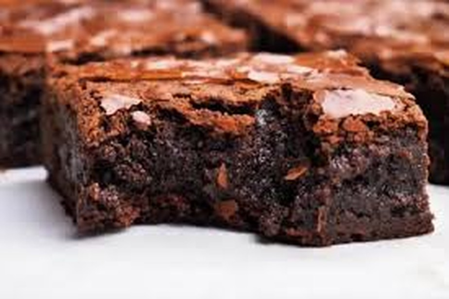
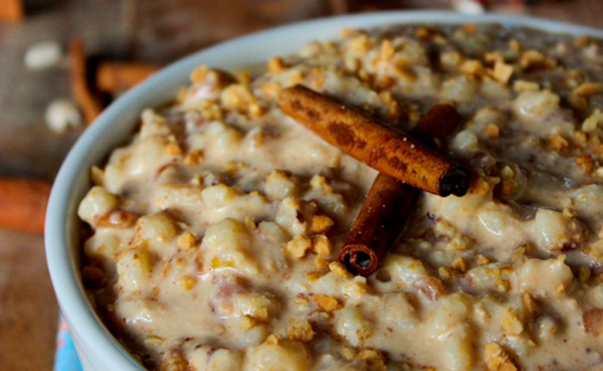

A pipoca gourmet é uma pipoca feita com caramelo, chocolate e leite em pó, é a quantidade perfeita de tudo...
Eu faço ela para vender, além de ser um produto com muita qualidade é bem cara e dificil de fazer!

O Brownie é uma receita que aprendia fazer recentemente e já amo, é feita com muito chocolate e fica melhor ainda com sorvete!
A Rabanada é uma receita que é feita normalmente no natal, mas eu gosto tanto que qualquer época do ano fica maravilhosa,
pra mim é uma receita de familia, toda vez que minha tia vem do Rio de Janeiro ela faz pra mim!

Eu como uma pessoa apaixonada em maracujá, amo as receitas que vai essa fruta,eu amo um Mousse de Maracujácom um chocolate por cima!

A Canjicaprincipalmente a de amendoim é uma das minhas receitas favoritas que a minha avó faz. quando vou na casa da minha avó
como tanto que parece que o mundo vai acabar amanha kkkkk
